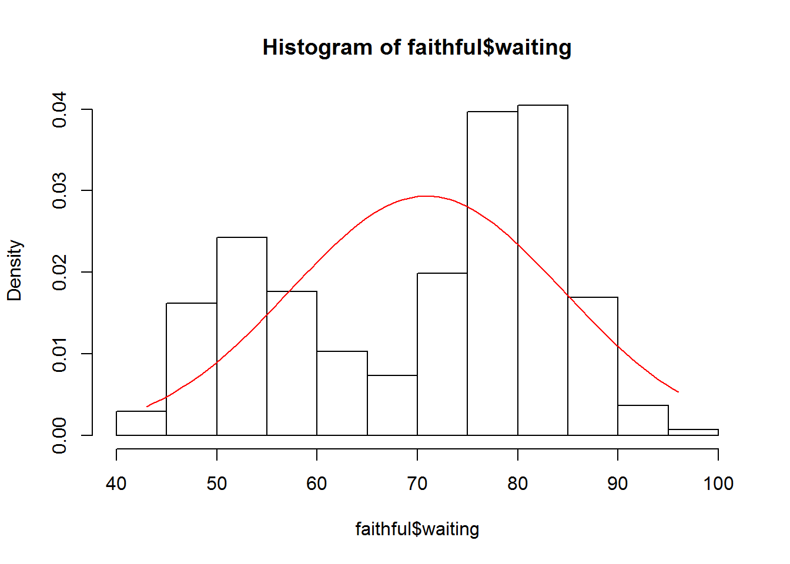
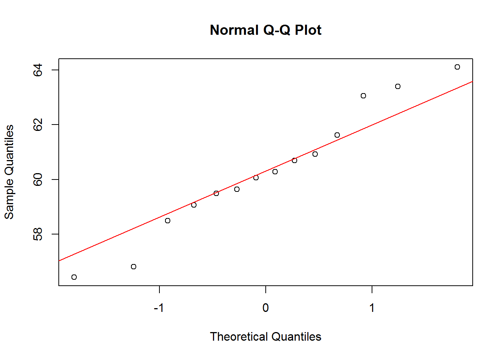

Assignments Week 1
Wouter van Amsterdam
2017-10-23
Last updated: 2017-10-26
Code version: b498b13
Day 1
1. Left-handedness, binomial distribution
In a population 10% of the individuals is left-handed. We draw a random sample of 20 people from this population and indicate with X the number of “left-handersâ€. We will calculate the following binomial probabilities with SPSS and R: \(P(X = 0), P(X = 1), P(X < 3), P(X >3)\).
This question regards the binomial distribution, which for a sample of size \(n\), with probability \(p\), is given by
\(P(X=x) = {n \choose x}*p^{x}*(1-p)^{n-x}\)
\(P(X = 0)\) and \(P(X = 1)\) are probabilities for a single value, so density is what we need:
dbinom(x = c(0, 1, 2), size = 20, p = .1)[1] 0.1215767 0.2701703 0.2851798\(P(X < 3)\) and \(P(X > 3)\) concern quantiles:
pbinom(q = 2, size = 20, p = 0.1)[1] 0.6769268pbinom(q = 4, size = 20, p = 0.1, lower.tail = F)[1] 0.04317451-pbinom(q = 4, size = 20, p = 0.1)[1] 0.0431745Note that
pbinom(q = 2, size = 20, p = 0.1)[1] 0.6769268sum(dbinom(x = c(0,1,2), size = 20, p = 0.1))[1] 0.6769268Plot all probabilities
x_seq = 0:20
densities <- dbinom(x = x_seq, size = 20, p = 0.1)
plot(x_seq, densities, ylim = c(0,1))2. Elevator weight limit
A notice in an elevator states that it can carry up to 16 people, with a total weight of 1240 kg. A random sample of 16 people from a distribution with a mean of 72 kg and a standard deviation of 12 kg gets into the elevator. What is the probability that these people weigh more than 1240 kg?
First calculate the standard deviation of the sum of the weights of 16 people
\(\sigma_{total} = \sqrt{n}*\sigma_{population}\)
n = 16
mu = 72
sigma = 12
sigma_total = sigma * sqrt(n)
sigma_total[1] 48Then calculate the probability of exceeding 1240 kg with 16 people.
pnorm(q = 1240, mean = n * mu, sd = sigma_total, lower.tail = F)[1] 0.03337651See if this matches the results of a simulation
nsim = 10000
set.seed(2)
x <- matrix(rnorm(n = n * nsim, mean = mu, sd = sigma), ncol = nsim)
totals <- colSums(x)
hist(totals)
abline(v = 1240, lty = 2)
1 - ecdf(totals)(1240)[1] 0.03383. Excercises in SPSS
Skipped
4. Excercises in R
In this exercise we will assess whether sample data appear to be normally distributed. Load the library ISwR and open its built-in dataset
rmr:
library(ISwR)
data(rmr)
# help(rmr)
- Get some information about the dataset, using
summary(rmr)
summary(rmr) body.weight metabolic.rate
Min. : 43.10 Min. : 870
1st Qu.: 57.20 1st Qu.:1160
Median : 64.90 Median :1334
Mean : 74.88 Mean :1340
3rd Qu.: 88.78 3rd Qu.:1468
Max. :143.30 Max. :2074
- Make a boxplot of the metabolic rate:
boxplot(rmr$metabolic.rate)Does it look symmetric? Are there any (extreme) outliers?
boxplot(rmr$metabolic.rate)
It looks pretty symmetric, with a single large outlier
Make a histogram of the variable
metabolic.rate:
hist(rmr$metabolic.rate, freq=FALSE)
The option
freq=FALSEis used here to indicate that, rather than setting out the frequencies on the vertical axis, the densities (“relative frequenciesâ€) are plotted, which results in a histogram with total area equal to 1. This puts it on the same scale as the curve of the normal distribution that we want to add next. c. A best-fitting normal curve can be added as follows. First store the mean and the standard deviation of height in two variables, for example inmands, then passcurve(dnorm(x,m,s),add=TRUE)
hist(rmr$metabolic.rate, freq=FALSE)
m <- mean(rmr$metabolic.rate)
s <- sd(rmr$metabolic.rate)
curve(dnorm(x,m,s),add=TRUE)
- Does the variable metabolic.rate appear to be normally distributed?
looks pretty normal
- Create a new variable,
lrate, that is the natural logarithm ofmetabolic.rateand repeat parts b) and c) for this new variable.
rmr$lrate = log(rmr$metabolic.rate)
- With which variable would you prefer to work, the original or the transformed one?
The original variable is already pretty normaliy distributed, so transformation is not necessary here, and creates superfluous additional steps for interpretation.
6. Q-Q plot
In this exercise we will build a normal Q-Q plot of the variable
metabolic.ratefrom thermrdataset. It assumes that you have already done the previous exercise and that its resulting objects are still available in the R workspace. a. To get a normal Q-Q plot in R, simply typeqqnorm(rmr$metabolic.rate). To help you judge whether the points are on a straight line you could add the best fitting line to the plot with the commandabline(m,s). (Make sure that m and s are the mean and SD of the original data.) What does this command do, and why does it make sense here?
qqnorm(rmr$metabolic.rate)
abline(m, s, col = "red")Explanation
This command with abline(.. creates an intercept line which follows \(y = a + b*x\). In the case of the Q-Q plot, on the \(y\)-axis the measured quantity is shown, on the \(x\)-axis the number of standard deviations away from the mean. When the variable is normally distributed, it will follow \(y = \mu + quantile*\sigma\). This corresponds with the plotted ‘abline’ when \(a =\mu\) and \(b = \sigma\). In the Q-Q plot, the actually measured quantities are ordered from low to high. It is expected that most of the measured values will be somewhere around the mean, while only few will be on the extreme ends of the distribution. To be exact, pnorm(x) of the observations are expected to have a value of \(<x\). Conversely, the \(n\) lowest observations are expected at qnorm(p = n / nTotal, mean = mu, sd = sigma), which is equivalent to a \(Z\)-value of qnorm(n / nTotal). Where
\(Z = \frac{x - \mu}{\sigma}\)
So the number of standard deviations away from the mean.
For an illustration of this explanation, read the following code.
- To better understand its meaning, we will build it up ourselves:
s.meta <- sort(rmr$metabolic.rate)
n <- length(rmr$metabolic.rate)
index <- ((1:n)-0.5)/n
q.index <- qnorm(index)We will now plot our own Q-Q plot next to the one from R.
par(mfrow=c(1,2)) #plots two graphs in 1 row and 2 columns, so next to each other
qqnorm(rmr$metabolic.rate)
plot(s.meta~q.index)
par(mfrow=c(1,1)) #back to one graph (so in 1 row and 1 column)Try and explain what each line does, and why this results in the desired Q-Q plot.
- Logarithmically transform the metabolic rate data, and redo part b.
qqnorm(log(rmr$metabolic.rate))
m_log = mean(log(rmr$metabolic.rate))
s_log = sd(log(rmr$metabolic.rate))
abline(m_log, s_log, col = "red")
Not much difference
Adding a few cases on the lower end of the distribution will change the Q-Q plot drastically.
par(mfrow = c(1,2))
qqnorm(rmr$metabolic.rate)
qqline(rmr$metabolic.rate, col = "red")
qqnorm(c(rep(500, 20), rmr$metabolic.rate))
qqline(c(rep(500, 20), rmr$metabolic.rate), col = "red")
par(mfrow = c(1,1))Day 2. Estimating with uncertainty
Excercises without SPSS or R
- The following sample represents systolic blood pressure measurements for six patients: 121, 130, 127, 142, 139, 115
- Using your pocket calculator and suitable tables, compute a 95% confidence interval for the mean blood pressure in the population.
- Test at a confidence level of 95% the hypothesis that in the population the mean is 120.
\[n = 6\] \[mean = (130+127+142+139+115+121)/6 = 129\] \[sd^2 = (1+2^2+13^2+10^2+14^2+8^2)/(6-1) = 106.8\] \[sd = 10.33\] \[SE = \frac{10.33}{\sqrt{6}} = 4.219\]
Grab critical value from T-table with 5 degrees of freedom, at 0.025: 2.571 (which equals the R-command qt(p = .025, df = 5)).
Then the 95% confidence interval is \[mean \pm SE*2.571 = {118.2, 139.8}\]
Which equals:
t.test(c(130,127,142,139,115,121))$conf.int[1] 118.1547 139.8453
attr(,"conf.level")
[1] 0.95
- Researchers often compute intervals as estimates of population means. Since these are calculated based on sample data you cannot be sure that such an interval will really cover the population mean. But you can tell the probability with which this will be the case. A common value for this probability is 0.95. Suppose that a scientist carries out 20 independent studies where he computes a single 95% confidence interval every time.
- What is the probability that all intervals will cover the true population mean?
- What is the probability that one CI will not cover the true mean? And for two CI’s? (Source: R.G.D. Steel & J.H. Torrie, Principles and procedures of statistics, a biometrical approach, McGraw-Hill, International student edition).
For each study, the chance of coverage is 95% (\(p=0.95\)), and each study is assumed to be independent of each other, and based on the same population (so independent and identically distributed, i.i.d.)
Then \[P(n_{no\ coverage}=0) = p^{20} = 0.358\]
For 1 confidence interval not covering the true mean: \[P(n_{no\ coverage}=1) = {20 \choose 1} * p^{19}*(1-p)^1 = 0.377\]
For 2 confidence intervals not covering the true mean \[P(n_{no\ coverage}=2) = {20 \choose 2} * p^{18}*(1-p)^2 = 0.189\]
- Use the data from exercise 1 to construct 90%, 96% and 99% confidence intervals for the mean blood pressure in the population. Use the T distribution from http://homepage.stat.uiowa.edu/~mbognar/ to get the correct critical values for the confidence intervals by filling in the appropriate degrees of freedom and the left- or right-tail probability and pressing Esc.
- Use the table of the t-distribution on Moodle (under Introductory matters, Tables) to confirm the critical values for the 90% and 99% confidence intervals. Can you use this table for a 96% confidence interval?
Left for the reader. Same as a. but using different critical values of the t-distribution
Excercises in SPSS
Not covered here
Excercises in R
- Open the built-in dataset faithful in R (by typing data(faithful) )
- Get some information about the dataset using the command: help(faithful)
data(faithful)
# help(faithful)
- The dataset contains the variables eruptions and waiting. Make QQ-plots of both these variables.
qqnorm(faithful$eruptions)
qqline(faithful$eruptions, col = "red")qqnorm(faithful$waiting)
qqline(faithful$waiting, col = "red")Both are not very normally distributed
- Make a histograms of the variables eruptions and waiting together with their normal curves. For this, create a function that returns a function with the normal distribution for a given \(\mu\) and \(\sigma\).
norm_function <- function(mu, sd) {
f = function(x) (1/(sd*sqrt(2*pi)))*exp(-(x-mu)^2/(2*sd^2))
return(f)
}
hist(faithful$eruptions, freq = F)
my_norm <- norm_function(
mu = mean(faithful$eruptions),
sd = sd(faithful$eruptions))
curve(my_norm, min(faithful$eruptions), max(faithful$eruptions), add = T, col = "red")hist(faithful$waiting, freq = F)
my_norm <- norm_function(
mu = mean(faithful$waiting),
sd = sd(faithful$waiting))
curve(my_norm, min(faithful$waiting), max(faithful$waiting), add = T, col = "red")
- Is it reasonable to assume normality for the variables eruptions and waiting?
Based on the plots, no.
- (This is a repeat of Exercise #7, but now in R.) Check the central limit theorem by carrying out the following steps:
- Create six variables a, b, c, d, e and f , each of length 200, like this:
a <- runif(200)
b <- runif(200)
c <- runif(200)
d <- runif(200)
e <- runif(200)
f <- runif(200)Note that the runif function generates random numbers from a uniform distribution with mimimum 0 and maximum 1.
- Combine the six shorter variables in one long variable x like this:
x <- c(a,b,c,d,e,f)Check the variable x for normality.
hist(x)qqnorm(x)
qqline(x, col = "red")
- Create a variable of 200 means of samples of size 6 like this:
m <- (a+b+c+d+e+f)/6(Note that the first elements of variables a-f form one sample, whose mean will be the first element of m, etc.) Check this sequence of means m on normality.
hist(m)qqnorm(m)
qqline(m, col = "red")
- Compare the results in b) and c) in the light of the central limit theorem.
The variable x is not normally distributed. Instead, it is distributed like the distribution it was drawn from, namely the uniform distribution. However, when taking means of 6 draws from this distrubtion, these means themselves are a random variable, which by the central limit theorem is known to be approximately normally distributed.
- The aim of this exercise is to make you “feel†the central limit theorem.
- In your workspace, create an object pop containing the numbers 1, 2, . . . , 8.
pop <- 1:8From this population of size 8, samples of size 5 are drawn with replacement. There are 85 = 32768 such samples possible. A complete list of all these samples can be retrieved by loading the dataset samples.RData. (Use File, Load workspace…)
load(amstR::fromParentDir("data/samples.RData"))- Load the dataset samples.RData. This will create a 32768x5-matrix in your workspace. The rows of this matrix represent all possible samples from pop. View the first 10 samples by giving the command samples[1:10,].
samples[1:10,] V1 V2 V3 V4 V5
1 1 1 1 1 1
2 1 1 1 1 2
3 1 1 1 1 3
4 1 1 1 1 4
5 1 1 1 1 5
6 1 1 1 1 6
7 1 1 1 1 7
8 1 1 1 1 8
9 1 1 1 2 1
10 1 1 1 2 2
- Create a sequence M of 32768 sample means by passing the command
M <- rowMeans(samples)Without having a look at the content of M, can you predict how often the value 1 will occur among the 32768 sample means? The same question for the values 8, 1.2 and 7.8.
The samples are drawn with replacement, so the mean 1 is a possible value, however, it is not very likely to occur. Using probability theory
\[P(mean = 1) = p^5 = (1/6)^5 = 0 = P(mean = 8)\]
The answer for the value 8 is exactly the same.
The values 1.2 and 7.8 can only occur when all values are a 1 (or an 8), and 1 is a 2. So now:
\[P(mean = 1.2) = {5 \choose 1}*p(1)^4*p(2)^1 = 5*(1/6)^5 = 0.001=P(mean = 7.8)\]
- Make a frequency table of M by running the command below.
table(M)M
1 1.2 1.4 1.6 1.8 2 2.2 2.4 2.6 2.8 3 3.2 3.4 3.6 3.8
1 5 15 35 70 126 210 330 490 690 926 1190 1470 1750 2010
4 4.2 4.4 4.6 4.8 5 5.2 5.4 5.6 5.8 6 6.2 6.4 6.6 6.8
2226 2380 2460 2460 2380 2226 2010 1750 1470 1190 926 690 490 330 210
7 7.2 7.4 7.6 7.8 8
126 70 35 15 5 1 Check your answers from c). What is the frequency of occurrence of the number 2? And that of the number 7? e. Make an appropriate graph of the frequency table by giving the command:
barplot(table(M))Is this what you could expect according to the Central Limit Theorem?
Yes, this shows that the means of samples drawn from the uniform distrubution are normally distributed (or better: t-distributed with \(n\) degrees of freedom, where \(n\) is the sample size).
11.
This exercise is intended to give you a better understanding of 95% confidence intervals. The distribution of bladder volume in the population of adult men is approximately normal with mean 550 ml and standard deviation 100 ml. We will draw samples of N=25 from this population and for each sample we will calculate the mean and a 95% confidence interval for the mean. What is the standard error of the mean for samples of N=25 from this population?
This time, whe have the actual population standard deviation, instead of only our estimate of the sample standard deviation.
n = 25
mu = 550
s = 100
se = s / sqrt(n)
se[1] 20To draw 100 samples from this distribution, we will make a matrix of 2500 draws from this normal population, and put them into a matrix mymat with 25 rows and 100 columns, corresponding to 100 samples (columns) of 25 men per sample (rows). To make calculations with the matrix easier, we will then make a data frame mysamples from the matrix:
NB. using the command set.seed ensures that anyone else can replicate this code and achieve the exact same numbers.
set.seed(1)
mymat <- matrix(rnorm(2500, mean=550, sd=100), 25, 100)
mysamples <- data.frame(mymat)
head(mysamples) X1 X2 X3 X4 X5 X6 X7 X8
1 487.3546 544.3871 589.8106 579.1446 487.9633 621.2666 595.0187 546.5274
2 568.3643 534.4204 488.7974 505.6708 554.2116 542.6436 548.1440 628.7640
3 466.4371 402.9248 584.1120 550.1105 458.9078 546.2366 518.1932 757.5245
4 709.5281 502.1850 437.0637 557.4341 565.8029 481.8340 457.0638 652.7392
5 582.9508 591.7942 693.3024 491.0479 484.5415 517.5730 401.2540 670.7908
6 467.9532 685.8680 748.0400 493.1331 726.7287 556.0160 442.4808 426.8677
X9 X10 X11 X12 X13 X14 X15 X16
1 590.9402 730.3142 563.6222 663.0207 639.3674 595.6136 697.3881 549.1691
2 718.8873 516.8868 590.7168 321.0876 445.2702 514.6600 617.7268 562.8855
3 708.6588 389.4487 543.0345 624.1001 747.1337 567.0489 587.9963 535.4124
4 516.9092 569.7193 525.2336 418.3755 511.6368 463.5964 530.7202 533.6089
5 321.4764 576.3176 619.5551 641.9804 715.4145 617.9231 707.7892 726.3552
6 799.7662 451.4173 664.6228 589.8130 701.2213 517.2899 609.6234 626.2587
X17 X18 X19 X20 X21 X22 X23 X24
1 657.4441 711.2347 646.1697 418.1391 557.7303 381.5479 599.6961 648.6770
2 739.5655 386.2719 489.5574 586.4385 520.3131 535.5773 527.5125 607.5620
3 489.7003 472.0431 474.7123 573.3500 431.6758 668.0214 438.2857 752.4842
4 510.9132 485.8823 394.4388 669.3955 551.1293 618.1400 510.5005 353.7647
5 508.3778 481.8869 404.6106 547.2090 649.1601 564.3248 704.9830 433.5079
6 512.4343 346.6714 555.6332 514.2701 709.3967 430.7684 475.6486 412.3481
X25 X26 X27 X28 X29 X30 X31 X32
1 515.8933 439.9259 556.0921 406.6622 479.2432 557.0660 404.5309 451.9098
2 700.2425 621.4509 467.6508 444.4815 747.1572 398.1400 465.4346 658.7150
3 602.8308 525.3530 732.9730 476.6888 541.0001 636.3779 424.9520 563.9327
4 604.2191 518.0214 407.0084 571.0907 548.5983 600.1568 616.7288 511.3728
5 536.3327 686.2644 575.4137 450.1079 437.6543 514.5219 420.9230 662.3585
6 436.3266 427.2117 256.0226 657.7850 415.5870 501.1571 346.4996 474.0154
X33 X34 X35 X36 X37 X38 X39 X40
1 441.3091 566.6255 595.0425 568.6035 395.8597 457.5444 669.3692 453.8948
2 367.3917 423.0401 615.9551 567.6418 569.4321 449.2938 538.3605 588.0188
3 649.5282 784.9493 446.8579 641.5848 576.4423 531.0526 602.4859 600.5068
4 548.8138 408.7995 312.8977 582.0177 438.1265 643.3917 571.4421 752.7056
5 490.0372 548.3039 517.5424 513.3313 615.0953 584.3910 536.5550 556.4627
6 532.2052 495.5681 455.5701 455.9389 446.7100 631.4020 566.8509 596.3659
X41 X42 X43 X44 X45 X46 X47 X48
1 663.4965 424.7644 554.1999 454.1456 574.1896 424.1079 362.5795 674.6123
2 661.1932 449.0496 572.3422 389.5690 436.7241 528.4616 535.7095 517.0133
3 462.9222 625.1391 448.9535 365.4391 698.9907 302.8038 627.1904 634.4345
4 571.0732 419.1646 790.1222 605.5737 525.1753 482.5831 434.0882 451.8924
5 556.9396 602.7540 630.1962 543.9881 568.3584 499.8703 526.2084 536.0779
6 383.7351 496.6460 524.8792 627.2086 590.4871 704.2326 427.7807 768.5438
X49 X50 X51 X52 X53 X54 X55 X56
1 394.2964 588.9735 556.5266 672.6449 584.1248 486.1595 389.5688 574.3502
2 742.3164 479.4229 653.5326 580.7023 681.6167 662.4392 629.1351 661.4363
3 364.3170 544.6822 776.0216 612.4333 454.0224 467.2267 556.8157 542.3447
4 339.3882 810.6444 681.4696 556.1341 429.4425 371.2220 611.4396 643.2925
5 619.7649 542.7407 462.9977 538.9174 706.7573 464.5990 429.6932 534.2018
6 640.7444 520.3728 499.6870 392.3766 572.5286 492.7977 515.9545 481.8490
X57 X58 X59 X60 X61 X62 X63 X64
1 704.6881 528.0331 484.1455 491.9029 635.0043 510.2431 515.9341 497.0650
2 567.8921 445.9953 556.3346 723.6767 457.4687 559.1724 554.9602 684.3577
3 521.7453 569.2950 555.4477 532.7325 639.3581 526.1306 679.5263 596.9434
4 473.2701 494.4764 574.7009 456.2007 455.8990 503.8038 581.4624 524.6895
5 492.3596 577.4991 562.4036 521.5406 603.8952 742.6341 630.1573 586.9104
6 458.5144 494.9487 496.4743 491.0982 531.8026 562.2055 598.6059 415.3293
X65 X66 X67 X68 X69 X70 X71 X72
1 584.4194 391.0589 546.4185 565.9232 712.1203 383.0420 575.3138 490.2778
2 551.2720 673.4104 500.9557 374.8807 517.0897 699.0701 551.1498 534.2796
3 462.6550 516.4545 527.9433 668.4831 317.3590 619.1487 352.4216 568.4185
4 584.2800 349.8997 439.8791 670.7032 769.2998 545.9023 507.3673 448.6968
5 532.2612 548.2542 556.3470 647.7649 441.7520 670.4345 611.2303 482.0157
6 642.1433 525.9033 608.3526 541.8008 499.3639 679.8515 673.0814 425.7306
X73 X74 X75 X76 X77 X78 X79 X80
1 621.4086 585.7042 512.5288 494.2794 492.9006 578.5456 486.1306 460.5379
2 608.1385 565.5726 834.0185 438.6675 578.6539 351.6090 526.1319 791.0060
3 535.3276 705.2789 623.2393 386.9365 664.7620 553.0740 385.7097 455.0353
4 700.6982 543.5930 634.0519 511.2176 563.9559 473.9995 527.7425 605.9152
5 522.0467 449.1781 328.0348 722.2632 558.8927 427.5987 372.4432 528.8585
6 752.7739 460.7104 417.2536 494.1500 286.9841 650.2367 548.4534 448.2145
X81 X82 X83 X84 X85 X86 X87 X88
1 461.3850 503.6087 712.3532 710.2584 415.8949 554.9470 510.0368 592.4896
2 357.7745 507.3500 390.9841 543.6328 545.4293 504.4451 678.6701 452.3691
3 711.9701 379.6905 489.0009 636.8828 768.7991 615.7889 533.6351 669.2972
4 601.9270 445.8503 518.6719 587.8375 692.2096 401.4533 658.5230 594.0960
5 544.4150 626.8735 457.7870 691.5688 568.3247 696.9185 622.9832 507.0902
6 619.6418 475.4680 524.3519 529.0973 484.7067 527.8239 520.0824 512.2336
X89 X90 X91 X92 X93 X94 X95 X96
1 641.6938 508.1498 671.0004 537.2097 518.8311 465.0771 671.7044 601.2077
2 630.9273 546.2357 474.7019 347.5955 570.5749 565.6863 722.0397 505.2616
3 478.8378 668.7299 485.0733 522.0321 484.6013 751.7415 518.7223 428.8968
4 281.0415 539.4342 524.5756 592.0631 434.6742 623.7593 539.7815 627.0954
5 493.2953 570.2442 420.3630 614.2885 602.7491 380.8411 566.7204 558.9009
6 679.9199 628.0408 507.5343 579.4381 689.3919 597.7717 595.6607 540.1082
X97 X98 X99 X100
1 512.5671 368.9544 456.7914 601.4099
2 649.5354 425.7301 687.3607 562.5395
3 560.2144 352.9245 503.8947 391.8752
4 698.2944 508.7963 681.5696 557.3041
5 606.0049 632.5804 615.8935 684.7697
6 564.2451 493.8441 442.9009 687.5400Now we take the mean of each row of the data, resulting in a column of 100 sample means. We use the apply function to accomplish this (see the R help for information about this function):
smeans <- apply(mysamples,2,mean)Now we want to plot the means, together with their 95% CIs. We will plot them against sample number (1 through 100). Add a horizontal line at the true population mean:
x <- 1:100
plot(x, smeans, ylab="sample mean",xlab="sample number")
abline(h=550)To the above plot we will add 95% CIs. We use the arrow command to add “arrows†(without arrowheads: length=0) that are 1.96*SE long above and below the sample mean (why 1.96?):
We use 1.96 because qnorm(p = 0.025) equals 1.96. The point at which the cumulative probability density reaches 2.5% is 1.96 (measured in standard deviations, when using the standard normal distribution with \(\mu = 0\) and \(\sigma = 1\))
plot(x, smeans, ylab="sample mean",xlab="sample number")
abline(h=550)
arrows(x, smeans - 1.96*20, x, smeans + 1.96*20, angle=90, length=0)How many of your 95% CIs contained the true population mean?
not_too_low = smeans + 1.96*20 > 550
not_too_high = smeans - 1.96*20 < 550
sum(not_too_low & not_too_high)[1] 96So in this case, 96 of the confidence intervals cover the true mean of 550ml.
If you put the above commands in an R “script†you can re-run them several times. How does your graph change?
All point estimates and confidence intervals change, but the number of confidence intervals covering the true mean of 550ml stays approximately the same.
Day 3: Hypothesis testing and power, part 1
Exercises without SPSS or R
1. Does alcohol affect your reaction time?
Subjects are given a psychological test when they are sober (no alcohol) and after drinking two beers. The dataset below contains reaction times (in ms) for 6 subjects while sober and after drinking alcohol.
sober = c(73, 57, 97, 60, 76, 87)
with_alcohol = c(81, 80, 121, 94, 85, 102)
- To answer this question, a researcher uses a paired design, measuring reaction time twice on each subject: once while sober; and once with alcohol. (To minimize the effect of learning, subjects were randomized to either sober first and then with beer, or the other way around. This is called a “cross-over†design. Here we will ignore the possible effect of which condition was given first.) Use a suitable test to check whether the mean reaction times with and without alcohol differ significantly.
The appropriate test here is a matched two-sample t-test, assuming equal variance of the groups. This is equivalent to substracting the reaction times of the different conditions for each patients, and then performing a single sample t-test, where a significant difference will be inferred if the confidence boundries exclude 0. We will first do it ‘by hand’, and then with the r-command.
n = length(sober)
mean_sober = mean(sober)
mean_alcohol = mean(with_alcohol)
mean_sober[1] 75mean_alcohol[1] 93.83333difference = with_alcohol - sober
mean_difference = mean(difference)
s_difference = sd(difference)
se_difference = s_difference / sqrt(n)
t_value = qt(0.025, df = n-1)
mean_difference + c(-1,1)*t_value*se_difference[1] 29.357382 8.309285# for comparison
t.test(sober, with_alcohol, paired = T, var.equal = T)
Paired t-test
data: sober and with_alcohol
t = -4.6002, df = 5, p-value = 0.005839
alternative hypothesis: true difference in means is not equal to 0
95 percent confidence interval:
-29.357382 -8.309285
sample estimates:
mean of the differences
-18.83333 t.test(with_alcohol - sober)
One Sample t-test
data: with_alcohol - sober
t = 4.6002, df = 5, p-value = 0.005839
alternative hypothesis: true mean is not equal to 0
95 percent confidence interval:
8.309285 29.357382
sample estimates:
mean of x
18.83333 The confidence interval for the mean does not include 0, so significant difference is noted.
Remark: stricly speaking, reaction times can not be perfectly normally distributed, as they are bounded by 0 on the left side, the Poisson distribution might be better. However, when the mean is sufficiently large and the spread sufficiently low, this distribution appriximates the normal distribution. Moreover, by the Central Limit Theorem, the sample mean is approximately normally distributed.
Exercises in R
5.
This exercise uses the built-in dataset react, from the library ISwR. The dataset is also on Moodle in the file react.RData. The description of the dataset and research question is given in Exercise #4 (SPSS dataset Mantoux.sav) above. a. Get the dataset in your workspace:
library(ISwR)
data(react)
- Print the content of the dataset to the screen. What do you see?
react [1] -9 -6 -5 -5 -5 -4 -4 -4 -4 -4 -4 -4 -4 -4 -4 -4 -4 -4 -4 -4 -4 -4 -4
[24] -4 -4 -4 -3 -3 -3 -3 -3 -3 -3 -3 -3 -3 -3 -3 -3 -3 -3 -3 -3 -3 -3 -3
[47] -3 -3 -3 -3 -3 -3 -3 -3 -3 -2 -2 -2 -2 -2 -2 -2 -2 -2 -2 -2 -2 -2 -2
[70] -2 -2 -2 -2 -2 -2 -2 -2 -2 -2 -2 -2 -2 -2 -2 -2 -2 -2 -2 -2 -2 -2 -2
[93] -2 -2 -2 -2 -2 -2 -2 -2 -2 -2 -2 -2 -1 -1 -1 -1 -1 -1 -1 -1 -1 -1 -1
[116] -1 -1 -1 -1 -1 -1 -1 -1 -1 -1 -1 -1 -1 -1 -1 -1 -1 -1 -1 -1 -1 -1 -1
[139] -1 -1 -1 -1 -1 -1 -1 -1 -1 -1 -1 -1 -1 -1 -1 -1 -1 -1 -1 -1 -1 -1 -1
[162] -1 -1 -1 -1 -1 -1 -1 -1 -1 -1 -1 -1 -1 -1 -1 -1 -1 -1 -1 -1 -1 -1 -1
[185] -1 -1 -1 -1 -1 -1 -1 -1 -1 -1 -1 -1 -1 -1 0 0 0 0 0 0 0 0 0
[208] 0 0 0 0 0 0 0 0 0 0 0 0 0 0 0 0 0 0 0 0 0 0 0
[231] 0 0 0 0 0 0 0 0 0 0 0 0 0 0 0 0 0 0 0 0 0 0 0
[254] 0 0 0 0 0 0 1 1 1 1 1 1 1 1 1 1 1 1 1 1 1 1 1
[277] 1 1 1 1 1 1 1 1 1 1 1 1 1 1 1 1 1 1 1 1 1 1 1
[300] 1 2 2 2 2 2 2 2 2 2 2 2 2 2 2 2 2 2 2 2 2 2 2
[323] 2 2 2 3 3 3 3 3 4 4 5 8str(react) int [1:334] -9 -6 -5 -5 -5 -4 -4 -4 -4 -4 ...React is an integer vector of length 334
- Make a histogram of the variable react. Also try out the following command:
hist(react)plot(density(react))The plot(density()) command tells R to plot the estimated probability density for a variable, i.e. a kind of smooth version of a histogram.
- Run a suitable t-test to check whether the mean of the measurements differs significantly from zero:
t.test(react)
One Sample t-test
data: react
t = -7.7512, df = 333, p-value = 1.115e-13
alternative hypothesis: true mean is not equal to 0
95 percent confidence interval:
-0.9985214 -0.5942930
sample estimates:
mean of x
-0.7964072
- This exercise uses the built-in dataset Loblolly. The dataset contains information on the growth of 14 pine trees over a period of 25 years. Is the growth between age 20 and 25 significant?
- Get the dataset into the workspace, attach it to your workspace, and get some information about the dataset.
data("Loblolly")
attach(Loblolly)
str(Loblolly)Classes 'nfnGroupedData', 'nfGroupedData', 'groupedData' and 'data.frame': 84 obs. of 3 variables:
$ height: num 4.51 10.89 28.72 41.74 52.7 ...
$ age : num 3 5 10 15 20 25 3 5 10 15 ...
$ Seed : Ord.factor w/ 14 levels "329"<"327"<"325"<..: 10 10 10 10 10 10 13 13 13 13 ...
- attr(*, "formula")=Class 'formula' language height ~ age | Seed
.. ..- attr(*, ".Environment")=<environment: R_EmptyEnv>
- attr(*, "labels")=List of 2
..$ x: chr "Age of tree"
..$ y: chr "Height of tree"
- attr(*, "units")=List of 2
..$ x: chr "(yr)"
..$ y: chr "(ft)"
- Select the 14 heights at age 20 from the dataset like this:
height20 <- subset(Loblolly,age==20)
height20 <- height20[,1]Similarly, store the 14 heights at age 25 into a variable height25.
height25 <- subset(Loblolly,age==25)
height25 <- height25[,1]
- Use an appropriate t-test to determine whether there is significant growth between ages 20 and 25. Graphically check any assumptions you make.
hist(height20)qqnorm(height20)
qqline(height20, col = "red")hist(height25)qqnorm(height25)
qqline(height25, col = "red")
t.test(height20, height25, paired = F)
Welch Two Sample t-test
data: height20 and height25
t = -10.416, df = 25.983, p-value = 9.076e-11
alternative hypothesis: true difference in means is not equal to 0
95 percent confidence interval:
-10.561461 -7.079967
sample estimates:
mean of x mean of y
51.46857 60.28929
- Don’t forget to detach the data before using the next data frame in R!
detach(Loblolly)7.
To start this exercise, first get the built-in dataset sleep. a. Get some information about the dataset. What is the study design? Is this paired or unpaired data?
data("sleep")
sleep extra group ID
1 0.7 1 1
2 -1.6 1 2
3 -0.2 1 3
4 -1.2 1 4
5 -0.1 1 5
6 3.4 1 6
7 3.7 1 7
8 0.8 1 8
9 0.0 1 9
10 2.0 1 10
11 1.9 2 1
12 0.8 2 2
13 1.1 2 3
14 0.1 2 4
15 -0.1 2 5
16 4.4 2 6
17 5.5 2 7
18 1.6 2 8
19 4.6 2 9
20 3.4 2 10# help(sleep)From the help file it is clear that each patient was tested under 2 conditions, so we should treat the data as paired. It is a cross-over design.
- Create two variables extra1 and extra2 by extracting the rows 1-10 (extra1) or 11-20 (extra2) and the first column from the dataset sleep. Also make a new variable diff, which is the difference between the two:
extra1 <- sleep[1:10,1]
extra2 <- sleep[11:20,1]
diff <- extra1 - extra2Test whether the mean extra hours of sleep differ for the two treatments. c. Part c) can be done quickly without “splitting†the dataset:
t.test(extra~group, data = sleep, paired = T)
Paired t-test
data: extra by group
t = -4.0621, df = 9, p-value = 0.002833
alternative hypothesis: true difference in means is not equal to 0
95 percent confidence interval:
-2.4598858 -0.7001142
sample estimates:
mean of the differences
-1.58
- Check whether the assumption of normally distributed differences is tenable.
qqnorm(diff)
qqline(diff, col = "red")Looks pretty ok
Power (and sample size) estimation in R
The function power.t.test( )
The power of a t-test to detect a difference of δ in a normally distributed outcome variable can be estimated by using the function power.t.test(). The general call to this function is of the form
power.t.test(n=…,delta=…,sd=…,sig.level=…,power=…,type=…,alternative=…)(Use the call?power.t.testto get information about all the options of this function). This function can be used in case of a one sample design or two (independent or paired) samples design.
args(power.t.test)function (n = NULL, delta = NULL, sd = 1, sig.level = 0.05, power = NULL,
type = c("two.sample", "one.sample", "paired"), alternative = c("two.sided",
"one.sided"), strict = FALSE, tol = .Machine$double.eps^0.25)
NULL
- An established hypothesis states that in the Netherlands the mean height of the adult male population is 175 cm. We want to determine the power of the one sample t-test for certain specific values of mu under the alternative hypothesis, for a sample size of 50 and a sample standard deviation of 10.
- Determine the power of the test against an alternative µ = 176, using the function power.t.test. Do the same against an alternative µ = 178.
n = 50
s = 10
mu0 = 175
mu1 = 176
mu2 = 178
power.t.test(n = n, sd = s, sig.level = 0.05, delta = mu1-mu0, type = "one.sample")
One-sample t test power calculation
n = 50
delta = 1
sd = 10
sig.level = 0.05
power = 0.1026452
alternative = two.sidedpower.t.test(n = n, sd = s, sig.level = 0.05, delta = mu2-mu0, type = "one.sample")
One-sample t test power calculation
n = 50
delta = 3
sd = 10
sig.level = 0.05
power = 0.5476304
alternative = two.sided
- You could compute the power for some more alternatives and then make a curve. To make life a bit easier, R makes it possible to define the parameter delta (i.e. the difference between mu under the alternative and the null hypothesis) as a vector for several values of mu under the alternative hypothesis. For example, you could store the alternatives µ = 176 and µ = 178 in a variable (vector) alt and the deltas in a variable d:
alt <- c(176,178)
d <- alt-175 and then pass the command
power.t.test(n=50,delta=d,sd=10,sig.level=0.05,type="one.sample")
One-sample t test power calculation
n = 50
delta = 1, 3
sd = 10
sig.level = 0.05
power = 0.1026452, 0.5476304
alternative = two.sidedThis would give you both answers to part (a) at once. To distill only the power values from the output, use
power.t.test(n=50,delta=d,sd=10,sig.level=0.05,type="one.sample")$power[1] 0.1026452 0.5476304Exploit the technique sketched above to make a power curve, that is, a curve with on the horizontal axis the alternatives and on the vertical axis the corresponding power. Let the values under the alternative vary from 170 to 180, with steps of 0.25, using
seq(170, 180, 0.25)The resulting curve should be symmetric around 175, where it takes its minimum value. How big is the power at the value of 175?
mus <- seq(170, 180, 0.25)
deltas <- mu0-mus
powers <- power.t.test(n = n, delta = deltas, sd = s, sig.level = .05, type = "one.sample")$power
plot(mus, powers)min(powers)[1] 0.025powers[mus == 175][1] 0.025
- Now draw an actual sample of size 50 from a normal distribution with mean 176 and standard deviation 10.
set.seed(2)
samp <- rnorm(50,176,10)Test this sample in a t-test against the test value µ = 175. Store the results of the t-test in, say, an object result.T:
result.T <- t.test(samp, mu=175) To extract the p-value from the object result.T, pass the command
result.T$p.value[1] 0.2949313What is the p-value returned by the t-test? Does your t-test lead to a correct decision? How big is the probability that you will correctly reject \(H_0\)?
The decision here would be to maintain \(H_0\), which is incorrect, as the sample was drawn from a population with mean 176.
power.t.test(n = 50, sd = 10, delta = 1, sig.level = .05, type = "one.sample")
One-sample t test power calculation
n = 50
delta = 1
sd = 10
sig.level = 0.05
power = 0.1026452
alternative = two.sided
- [Challenge exercise] In this exercise we will try to determine the power of a one sample t-test by using simulations. Using R, we are going to draw 2000 samples, each of size n=50, from a normal distribution with mean 176 and standard deviation 10. For each of these samples we want to perform a t-test to test the null hypothesis that µ = 175. We will then determine in how many of the samples the null hypothesis is (correctly) rejected.
We will first define a new function (T.p) that returns the p-value from a one sample t-test:
T.p <- function(X) {
result.T <- t.test(X, mu=175)
return(result.T$p.value)
} Next we draw our samples and calculate the p-value for each, storing them in an object RES.
# First make an empty vector to fill with results (p-values)
RES <- rep(NA, 2000)
# Draw 2000 samples of 50 and put the p-value from each in RES:
set.seed(2)
for (i in 1:2000) {
dat <- rnorm(50,176,10)
RES[i] <- T.p(dat)}
# Get the number and proportion of samples for which the p-value is lower than 0.05
sum(RES<0.05); sum(RES<0.05)/2000[1] 232[1] 0.116Compare this to your answer found in c).
This is pretty close to the calculated power with power.t.test.
NOTE: Obviously it is not necessary to use simulations to get the power if you know that the assumption of normally distributed data is true, but you could use this method for situations where the data do not come from a normal distribution and if the sample size is small. This way you could compare the power of the t-test to alternative (non-parametric) tests.
Session information
sessionInfo()R version 3.4.1 (2017-06-30)
Platform: x86_64-w64-mingw32/x64 (64-bit)
Running under: Windows 7 x64 (build 7601) Service Pack 1
Matrix products: default
locale:
[1] LC_COLLATE=Dutch_Netherlands.1252 LC_CTYPE=Dutch_Netherlands.1252
[3] LC_MONETARY=Dutch_Netherlands.1252 LC_NUMERIC=C
[5] LC_TIME=Dutch_Netherlands.1252
attached base packages:
[1] stats graphics grDevices utils datasets methods base
other attached packages:
[1] ISwR_2.0-7
loaded via a namespace (and not attached):
[1] bootstrap_2017.2 survcomp_1.27.0 Rcpp_0.12.12
[4] knitr_1.17 magrittr_1.5 splines_3.4.1
[7] prodlim_1.6.1 lattice_0.20-35 stringr_1.2.0
[10] survivalROC_1.0.3 tools_3.4.1 grid_3.4.1
[13] data.table_1.10.4-2 KernSmooth_2.23-15 rmeta_2.16
[16] git2r_0.19.0 htmltools_0.3.6 yaml_2.1.14
[19] survival_2.41-3 rprojroot_1.2 digest_0.6.12
[22] Matrix_1.2-10 lava_1.5.1 RColorBrewer_1.1-2
[25] SuppDists_1.1-9.4 evaluate_0.10.1 rmarkdown_1.6
[28] stringi_1.1.5 compiler_3.4.1 amstR_0.1.3
[31] backports_1.1.0 This R Markdown site was created with workflowr